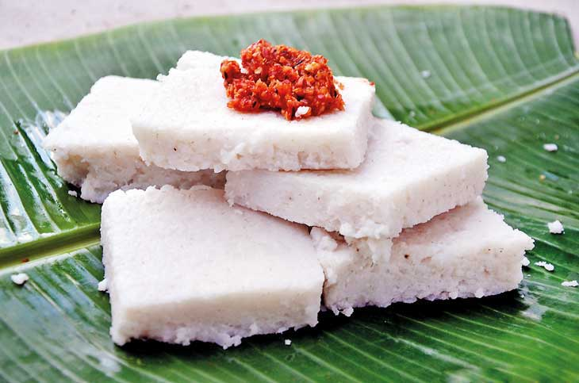

Wash the rice and cook it with water until it becomes soft. Once the water is mostly absorbed, add thick coconut milk and a pinch of salt. Stir continuously on low heat until the rice becomes creamy and sticky. Spread the cooked rice evenly onto a flat plate and press it down. Let it cool slightly, then cut it into diamond or square shapes. Serve with lunu miris or jaggery.
Back